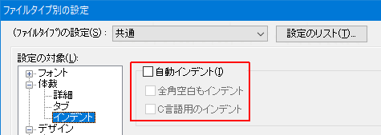
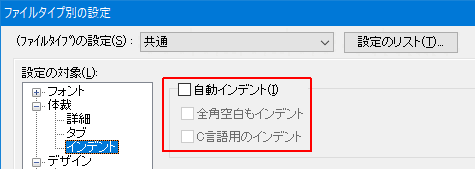

[HME0024A]
●行頭に空白が勝手に入って困る

- 改行すると次の行の頭に空白やタブが勝手に入ってしまいます。

-
自動インデント機能が働いているためです。「ファイルタイプ別の設定」で設定します。
設定の場所は「設定の対象」の「体裁」→「インデント」にある「自動インデント」になります。 (秀丸エディタヘルプ：インデント)

自動インデント機能が働いているためです。「ファイルタイプ別の設定」で設定します。
設定の場所は「設定の対象」の「体裁」→「インデント」にある「自動インデント」になります。 (秀丸エディタヘルプ：インデント)
